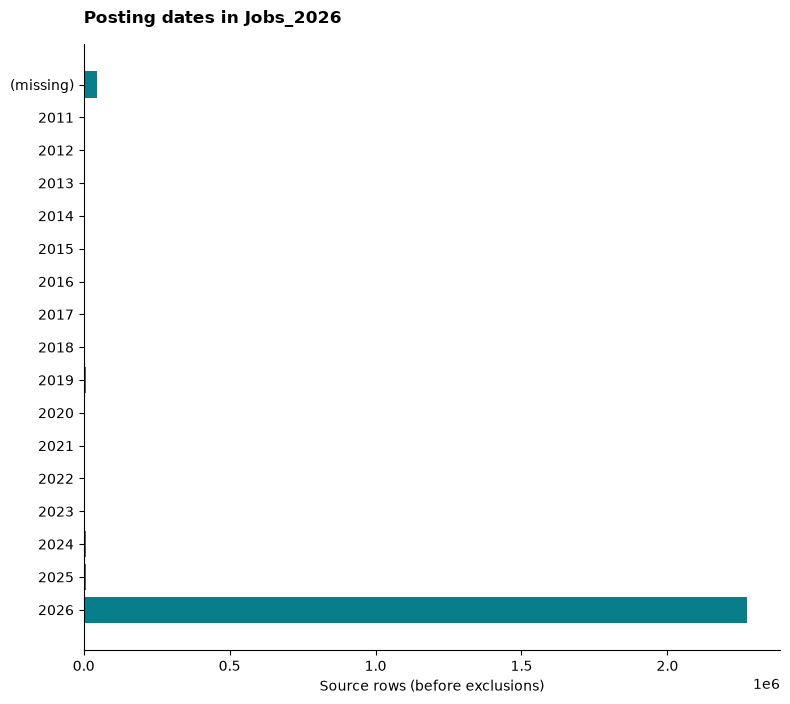
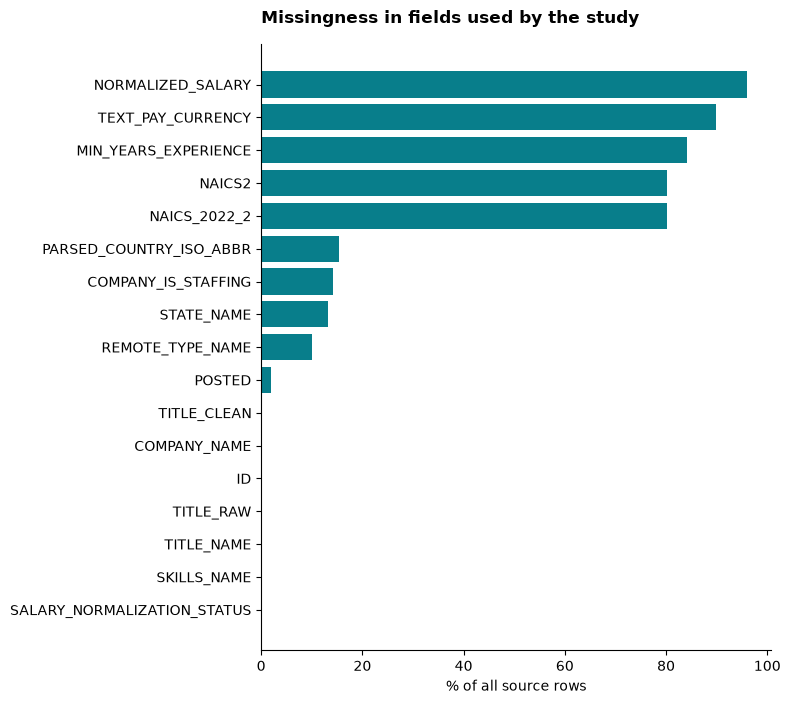

Data preparation and analytical design
1 Source and observation window
The source is the local Jobs_2026 snapshot: 97 posting partitions containing 2,350,355 records (Jobs_2026 2026). The observation window is January 1 through September 30, 2026. File hashes, row counts, versions and parameters are retained in run.json. The folder name does not guarantee that every record falls within 2026.
2 Posting filters and career cohort
The source EDA below profiles all local posting partitions before these exclusions; the market page examines the selected healthcare analyst cohort.
- Keep the first occurrence of each nonmissing posting ID in filename order. Different IDs for the same vacancy may remain.
- Parse dates in UTC and retain the stated observation window.
- Require explicit US country and a recognized industry sector. Prefer
NAICS_2022_2, falling back toNAICS2only when empty. - Exclude records explicitly flagged as staffing; missing staffing status is retained.
- For the career cohort, require NAICS 62 and an analyst phrase in the raw title, with clean title as fallback. The saved regular expression covers data analyst, data analytics analyst, business intelligence analyst, BI analyst, clinical analyst and healthcare analyst variants.
This yields 112 career postings. No model prediction determines inclusion. The industry anchor is a two-digit sector, broader than the four- or six-digit code preferred by Module 1 (AD688 course materials, n.d.). A finer-code analysis would require revised filters and a new run.
3 Preparation of career fields
Decode skill lists and count each skill at most once per posting. Retain postings without skills in the denominator. Merge recognized state abbreviations and names; retain unrecognized or country-only strings as unknown. Standardize remote, hybrid and onsite values, keeping unknown separate. Salary availability requires a finite positive normalized amount with explicit USD currency. Nonnegative experience values are retained, but zero is not verified as entry-level eligibility.
The market baseline shows field coverage and role-label anomalies. The role-label chart uses TITLE_NAME; career inclusion uses raw or clean titles, so these fields can disagree.
4 Employer sample and leakage controls
The classifier uses a separate employer-level sample. Require a usable normalized employer name and title, at least 20 eligible postings per employer, and one sector covering at least 80% of its postings. Keep up to the 10,000 highest-volume employers; 362 qualify in this snapshot. Other sectors form the comparison class for NAICS 62. This does not expand the career recommendations to other industries.
Split normalized employer-name groups into train, validation and test partitions before fitting vocabulary thresholds. Seed 2017 and stratification produce 253, 36 and 73 employers respectively, with no overlapping name keys. Case and whitespace normalization cannot eliminate all aliases or subsidiaries. Dataset-derived industry labels remain an imperfect evaluation target.
Title shares and employer-name words adapt the feature design of Goindani et al. (2017). Linear SVM and gradient-boosted trees are implemented with scikit-learn (Pedregosa et al. 2011). Hyperparameters are selected using validation F1. The career evaluation records the full filtering ledger, feature thresholds, baselines, metrics and confusion matrices.
5 Reproduce the evidence
For dataset-wide EDA, run python scripts/run_eda.py --data-dir E:/Data/Jobs_2026 followed by python scripts/verify_source_eda.py --data-dir E:/Data/Jobs_2026. Outputs under data/eda include field coverage, date and category distributions, input schemas and hashes. The source manifest is compared with the saved healthcare study.
python -m pip install -r requirements-study.txt
python scripts/run_study.py --data-dir E:/Data/Jobs_2026
python scripts/publish_study.py
python scripts/publish_eda.py
python scripts/verify_study.py
python scripts/verify_eda.py
quarto render
quarto render final_report.qmd --to docx
python scripts/verify_site.py
python scripts/verify_citations.pyReplace the data path with an authorized local copy. Rendering uses saved aggregates; the raw-data scan is needed only to reproduce or change the analytical cohort. No local server is needed. Source descriptions and identifiable posting records are not redistributed. Local execution was explicitly selected for this project; the existing course submission records note the EC2 deviation.
6 Local Jobs_2026 exploratory analysis
The analysis and EDA use E:\Data\Jobs_2026 (Jobs_2026 2026). This scan contains 2,350,355 rows across 97 posting partitions. Only jobs_2026_part_*.parquet files are inputs; supporting exports and backups are excluded. The source is read locally; the repository contains aggregates and file hashes.
EDA describes raw rows before the healthcare study’s filters. Duplicate IDs are counted but retained in these distributions. Posting-ID uniqueness does not rule out repeated advertisements with different IDs. Populated industry and skills fields are not independently verified labels.
| Measure | Observed value |
|---|---|
| Nonmissing unique IDs | 2,350,355 |
| Repeated-ID rows beyond first occurrence | 0 |
| Missing IDs | 0 |
| Earliest parsed posting date (UTC) | 2011-10-03 00:00:00+00:00 |
| Latest parsed posting date (UTC) | 2026-12-30 00:00:00+00:00 |
| Missing or unparseable dates | 45,104 |
| Dated January–September 2026, before other filters | 2,217,149 |

6.1 Field coverage
Missingness covers the 17 fields consumed by the study. Missing means null or whitespace-only; strings such as [], Unknown or Unclassified still count as populated. Full input schemas are recorded in the EDA manifest.

| Field | Missing rows | Missing share |
|---|---|---|
| NORMALIZED_SALARY | 2,254,861 | 95.9% |
| TEXT_PAY_CURRENCY | 2,110,353 | 89.8% |
| MIN_YEARS_EXPERIENCE | 1,975,397 | 84.0% |
| NAICS2 | 1,885,763 | 80.2% |
| NAICS_2022_2 | 1,885,763 | 80.2% |
| PARSED_COUNTRY_ISO_ABBR | 360,091 | 15.3% |
| COMPANY_IS_STAFFING | 332,125 | 14.1% |
| STATE_NAME | 310,336 | 13.2% |
| REMOTE_TYPE_NAME | 235,365 | 10.0% |
| POSTED | 45,104 | 1.9% |
| TITLE_CLEAN | 651 | 0.0% |
| COMPANY_NAME | 33 | 0.0% |
| ID | 0 | 0.0% |
| TITLE_RAW | 0 | 0.0% |
| TITLE_NAME | 0 | 0.0% |
| SKILLS_NAME | 0 | 0.0% |
| SALARY_NORMALIZATION_STATUS | 0 | 0.0% |
6.2 Industry, geography and work arrangement
The following tables show the ten most frequent categories, including missing where it ranks in the top ten. Every share uses all 2,350,355 source rows. Full distributions are saved as CSVs. Sector uses NAICS_2022_2, falling back to NAICS2 only when blank; 1,242 nonempty values are outside the study’s accepted sector vocabulary. States normalize US abbreviations and full names; other state values share an explicit unrecognized category. Remote labels are lowercased and On-site is merged with Onsite.
6.2.1 Sector codes
| Category | Rows | Share of source |
|---|---|---|
| (missing) | 1,885,763 | 80.2% |
| 62 | 79,458 | 3.4% |
| 44-45 | 54,882 | 2.3% |
| 54 | 54,562 | 2.3% |
| 23 | 50,455 | 2.1% |
| 31-33 | 46,557 | 2.0% |
| 52 | 38,283 | 1.6% |
| 61 | 31,504 | 1.3% |
| 48-49 | 29,927 | 1.3% |
| 51 | 29,149 | 1.2% |
6.2.2 Parsed country
| Category | Rows | Share of source |
|---|---|---|
| US | 875,972 | 37.3% |
| (missing) | 360,091 | 15.3% |
| DE | 317,861 | 13.5% |
| FR | 280,445 | 11.9% |
| NL | 106,035 | 4.5% |
| BE | 64,594 | 2.7% |
| AT | 49,408 | 2.1% |
| CH | 44,796 | 1.9% |
| SE | 39,985 | 1.7% |
| CA | 23,641 | 1.0% |
6.2.3 US states
| Category | Rows | Share of source |
|---|---|---|
| (missing or unrecognized) | 1,685,610 | 71.7% |
| California | 87,245 | 3.7% |
| Texas | 59,159 | 2.5% |
| New York | 51,057 | 2.2% |
| Florida | 34,928 | 1.5% |
| Virginia | 27,540 | 1.2% |
| Ohio | 25,461 | 1.1% |
| Illinois | 25,295 | 1.1% |
| Pennsylvania | 23,329 | 1.0% |
| North Carolina | 21,481 | 0.9% |
6.2.4 Work arrangement
| Category | Rows | Share of source |
|---|---|---|
| unknown | 1,778,971 | 75.7% |
| (missing) | 235,365 | 10.0% |
| onsite | 132,258 | 5.6% |
| remote | 110,411 | 4.7% |
| hybrid | 93,350 | 4.0% |
6.3 Salary coverage and study boundary
There are 4,883 rows (0.2%) with a finite positive normalized salary, explicitly USD currency, consistent with the healthcare study salary filter. These are annual-equivalent advertised amounts; they may include compensation beyond base pay. They are not observed earnings or a representative wage survey. Raw amounts with mixed or unknown pay periods are not pooled.
| Annual-equivalent USD measure | Amount |
|---|---|
| Minimum | 1.50 |
| 25th percentile | 75,920.00 |
| Median | 137,500.00 |
| 75th percentile | 205,000.00 |
| Maximum | 514,176,000.00 |
All input filenames, row counts and SHA-256 hashes match the saved healthcare study. The healthcare analysis further restricts dates, country, sector, staffing status and usable employer/title fields. Its employer model and analyst career sample have different units and denominators; the filtering ledger is in the 2026 study.
Reproduce with python scripts/run_eda.py --data-dir E:/Data/Jobs_2026. EDA manifest, field missingness, posting months, sector distribution, country distribution, state distribution and work arrangements provide the aggregate evidence.